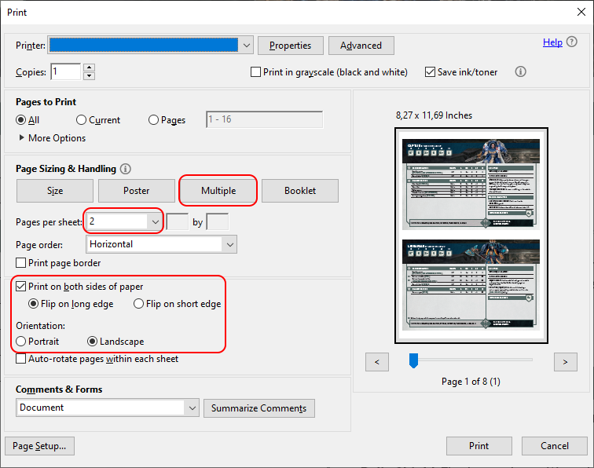
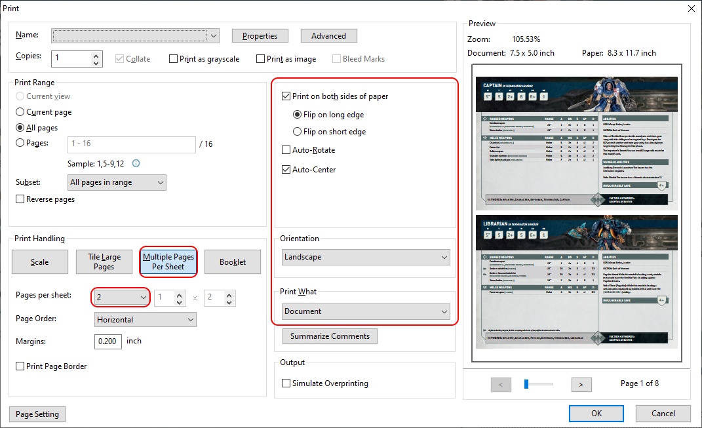
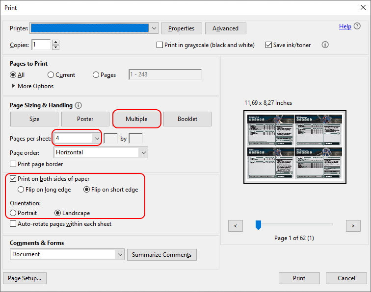
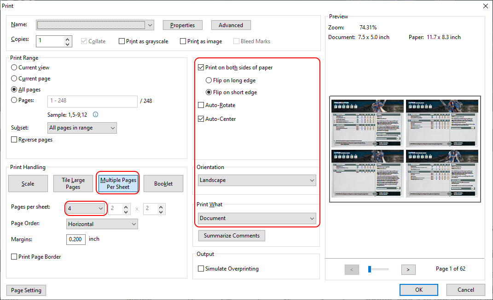

Warhammer 40k Datasheet PDF Converter
Upload and Convert
Datasheets Starting Page:
Cards Per Page:
2
4
Download converted PDF
What does this tool?
Prepares official Warhammer 40k 10th Edition PDF for Double Side Printing
How to use this tool
1) Select official Warhammer 40k 10th Edition PDF Index File
2) Enter Datasheets Starting Page (by default 7)
3) Select Cards Per Page value (by default 2)
4) Click "Upload and Convert"
5) Download Converted PDF (link should appear automatically)
6) Print and use for your game!
Print settings for 2 Cards Per Page
Click here to see Acrobat Reader Settings

Click here to see Foxit Reader Settings

Print settings for 4 Cards Per Page
Click here to see Acrobat Reader Settings

Click here to see Foxit Reader Settings
